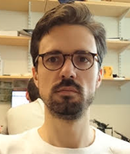
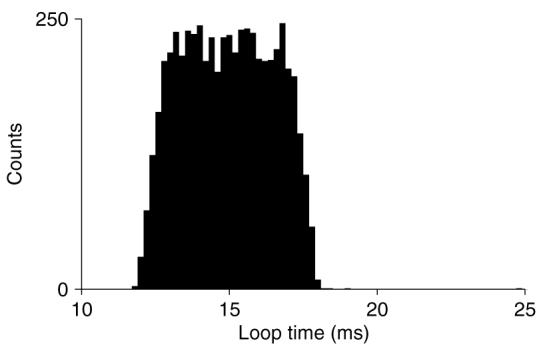
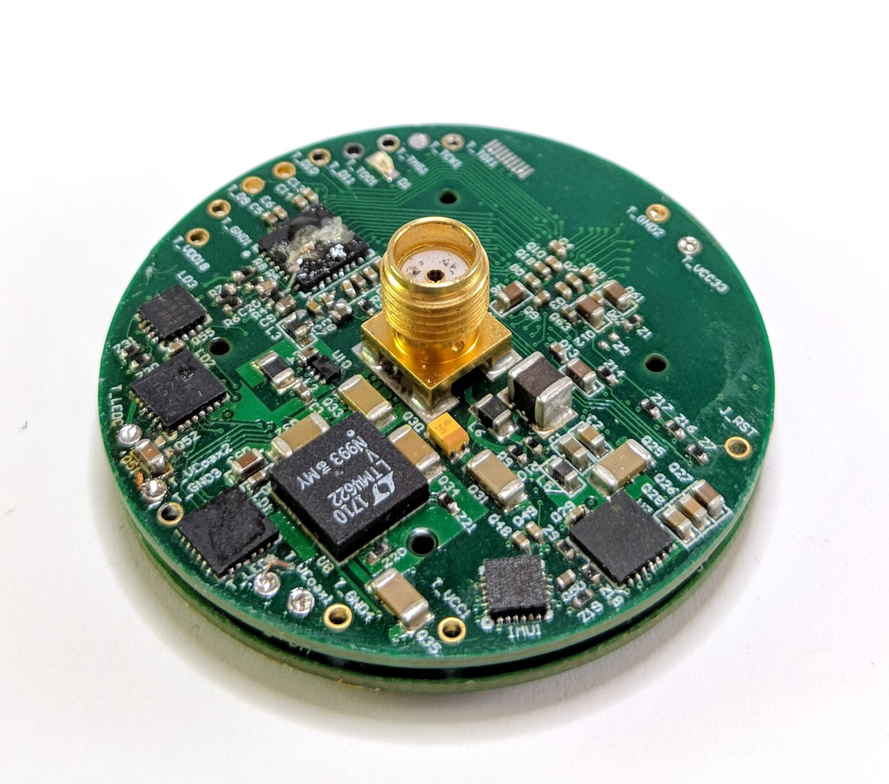

name: inverse layout: true class: center, middle, inverse --- ##.lgray[Migrating to Open Ephys++<br>] 2018 Feb @ MWL<br> <br> Jon Newman @jonnew<br> [homepage](http://www.mit.edu/~jpnewman/) | [github](https://github.com/jonnew)<br> Project Links<br> [homepage](https://jonnew.github.io/open-ephys-pcie) | [github](https://github.com/jonnew/open-ephys-pcie) | [BOM](https://docs.google.com/spreadsheets/d/1F-KWcdvH_63iXjZf0cgCfDiFX6XXW3qw6rlR8DZrFpQ/edit?usp=sharing) --- layout: false .left-column[ ## Citation Needed ### Referencing this work ] .right-column[ - This presentation encapsulates about 2 years of effort - Open Ephys is a __non profit__ - Please include __both__ of the following in __any paper or presentation__ that makes use of this technology: 1. Repository Link: - Hyperlink footnote .red[<sup>1</sup>] in presentation - Parenthetical URL in papers (https://github.com/jonnew/open-ephys-pcie) 2. Paper Citation: - Bioarxiv Paper scheduled for March 2018 - "Real" paper to follow .footnote[ Image: https://xkcd.com/285/<br> (1) https://github.com/jonnew/open-ephys-pcie ] ] --- layout: false .left-column[ ## Citation Needed ### Referencing this work ### People ] .right-column[ .pull-left[ Jon Newman <br><br><br><br><br><br><br><br> Jakob Voigts <br><br><br><br><br><br><br><br> Jack Zhang ] .pull-right[  ] ] --- template: inverse ##.lgray[Path to Open Ephys ++] --- layout: false .left-column[ ## Multichannel Ephys ### Distributed systems (A/D, etc) ] .right-column[ ### Large, distributed, multichannel A/D conversion 1. Unity gain preamp (1 amp/channel) 2. Analog tether (1 wire/channel) 3. Analog MUX (8 to 1) 3. Amplifier (1 / MUX) 4. Digitizer (1 / MUX) 5. Computer (1 / MUX) ] --- layout: false .left-column[ ## Multichannel Ephys ### Distributed systems (A/D, etc) ] .right-column[ ### Issues - System has physically large and delicate analog domain - Noise easy to pick up - Bulky - Hard to repair - A/D conversion using specialized PCB-level systems - Bulky - Requires synchronization across cards - Distributed Clocking etc - Computational power spread over many PCs - Bulky - Destroys real-time performance due to networking delays - Relies on commercial amplifiers, digitizers, etc - Expensive - Deprecated ] --- layout: false .left-column[ ## Multichannel Ephys ### Distributed systems (A/D, etc) ### Intan Chips ] .right-column[ ### _Integrated_ amplification and digitization <img class="right" src="./fig/intan-block-diagram.png" width="90%"/> - 16 bit with 10 mV dynamic range - 0.15 uV / bit (overkill, and not realized in practice) ] --- layout: false .left-column[ ## Multichannel Ephys ### Distributed systems (A/D, etc) ### Intan Chips ### Open Ephys ] .right-column[ ### Open Ephys 1.0 - Three main components 1. Intan chip (headstage) 2. USB to Intan bridge (Opal Kelly board) 3. Host computer (Acquisition drivers and software) ] --- layout: false .left-column[ ## Multichannel Ephys ### Distributed systems (A/D, etc) ### Intan Chips ### Open Ephys ] .right-column[ ### Open Ephys 1.0: Improvements .pull-right-small[ ] .pull-left-big[ 1. Much smaller analog domain 2. Higher resolution A/D conversion in 0.01 - 10 kHz domain 3. Simplified connectorization to acquisition PC 4. Software ease of use and expandability 5. Tiny cost (2000 USD or so) ] ] --- layout: false .left-column[ ## Multichannel Ephys ### Distributed systems (A/D, etc) ### Intan Chips ### Open Ephys ] .right-column[ ### Open Ephys 1.0: Regressions .pull-right-small[ ] .pull-left-big[ 1. Single, non-selectable analog reference - Digital reference selection increases noise - (this is probably made up for by small analog domain) 2. Intan amplifiers are - Nonlinear for high amplitude signals - Considerable phase and amplitude distortion at low frequencies ] ] --- layout: false .left-column[ ## Multichannel Ephys ### Distributed systems (A/D, etc) ### Intan Chips ### Open Ephys ] .right-column[ ### Open Ephys 1.0: Design Limitations .pull-right-small[ ] .pull-left-big[ 1. All logic is at host computer - Headstage is "dumb" 2. Connectorization reduced, but scales linearly with channel count - e.g. 8 extra wires/Intan chip - Commutation still relies on specialized devices 3. Hardware designs not scalable, modular, or standard 4. Although advertised for its closed-loop capabilities, hardware has remarkable _bad_ closed loop performance ] ] --- layout: false .left-column[ ## Multichannel Ephys ### Distributed systems (A/D, etc) ### Intan Chips ### Open Ephys ] .right-column[ ### Open Ephys 1.0: Design Limitations Closed loop performance is limited by USB bus .pull-left[ MEABench, ~2004  ] .pull-left[ Open Ephys, 2017 <img class="right" src="./fig/oe-loop-time.jpg" width="100%"/> ] ] --- layout: false .left-column[ ## Open Ephys++ ] .right-column[ ### Goals of OpenEphys++ 1. Scalable and modular design that allows increases in channel count and addition of future sensors with no increase in connectorization 2. Reduce and stabilize closed-loop latency 3. Commodity hardware and standard interfaces wherever possible 4. Modular firmware that can be extended 5. Low-level API - Agnostic to language, OS, etc and - Built to make high-level language bindings - Can be easily integrated into _existing_ acquisition software ] --- layout: false .left-column[ ## Open Ephys++ ] .right-column[ ### Latency - PCIe bus - Negligible latency - Extremely high bandwidth <img class="right" src="./fig/round-trip-time.png" width="100%"/> ] --- layout: false .left-column[ ## Open Ephys++ ] .right-column[ ### Scalability - PCIe bus - Up to 63 GB/second - On-headstage FPGA - Buffering async sources - Data framing - Frame serialization - Coaxial transmission.red[<sup>1</sup>] - 1.2 Gbps forward channel ~ 2500 channels at 30 kHz - 400 kbps back channel <img class="right" src="./fig/ulca-miniscope.jpg" width="30%"/> ] .footnote[ .red[1] miniscope.org; Nature volume 534, pages 115–118 ] --- layout: false .left-column[ ## Open Ephys++ ] .right-column[ ### Modularity - FPGA provides extremely generic IO - Controlling any sensor or actuator - Think Arduino ecosystem, VR device, and IOT on animal's head - Modular firmware allows mixing arbitrary sensors and actuators - Can be asynchronous - Does not even have to be periodic <img class="right" src="./fig/firmware.png" width="90%"/> ] --- layout: false .left-column[ ## Open Ephys++ ] .right-column[ ### `liboepcie`: Low-level API - ANSI C, no dependencies other than C standard library - UNIX inspired - Simple - Consistent - Inter-operable - Used for high-level library bindings - C++ - C#/.NET ] --- layout: false .left-column[ ## Open Ephys++ ] .right-column[ ### `liboepcie` ```c // Context typedef struct oe_ctx_impl *oe_ctx; // Context manipulation oe_ctx oe_create_ctx(); int oe_init_ctx(oe_ctx ctx); int oe_destroy_ctx(oe_ctx ctx); // Option getting/setting int oe_get_opt(const oe_ctx ctx, int option, void* value, size_t *size); int oe_set_opt(oe_ctx ctx, int option, const void* value, size_t size); // Hardware inspection, manipulation, and IO int oe_read_reg(const oe_ctx ctx, size_t dev_idx, oe_reg_addr_t addr, oe_reg_val_t *value); int oe_write_reg(const oe_ctx ctx, size_t dev_idx, oe_reg_addr_t addr, oe_reg_val_t value); int oe_read_frame(const oe_ctx ctx, oe_frame_t **frame); void oe_destroy_frame(oe_frame_t *frame); //int oe_write(const oe_ctx ctx, void *data, size_t num_frames); // Internal type conversion void oe_version(int *major, int *minor, int *patch); const char *oe_error_str(int err); const char *oe_device_str(int dev_id); ``` ] --- template: inverse ##.lgray[Migrating to Open Ephys ++] --- layout: false .left-column[ ## Migrating to Open Ephys++ ] .right-column[ ### Stuff you will need 1. Headstage & EIB* 2. Coaxial cable 3. Commutator (optional) 4. Host board** 5. FMC cable** 6. KC705** 7. Acquisition Software 8. Plating board (optional; lab shared) 9. Test board (optional, but not really) .footnote[ \* Choice depends on animal size<br> \*\* Will likely be combined in future ] ] --- layout: false .left-column[ ## Migrating to Open Ephys++ 1. Headstage & EIB ] .right-column[ ### Option 1: headstage-128 rev 1.0 with eib-128 - For rats - Tested - 3 PCB stack: EIB, headstage, serializer <br> <br> - 128 Channels of ephys - 2 channels optogenetics .pull-left[ ] .pull-right[  ] ] --- layout: false .left-column[ ## Migrating to Open Ephys++ 1. Headstage & EIB ] .right-column[ ### Option 2: headstage-64 with eib-64 .pull-left-small[ - In testing - ETA: 1 month - 2 PCB stack: EIB, headstage <br> <br> - 64 channels - Steam VR tracking - 9 DOF IMU - Optogenetics - Estim ] .pull-right-big[ <img class="right" src="./fig/mouse-overview.png" width="100%"/> ] ] --- layout: false .left-column[ ## Migrating to Open Ephys++ 1. Headstage & EIB ] .right-column[ ### Option 3: headstage-128-256 with eib-128 or eib-256 - WIP - 2 PCB stack: EIB, headstage <br> <br> - 128 or 256 channels - 9 DOF IMU - Steam VR tracking - 9 DOF IMU - Optogenetics - Estim - Wireless operation - Expansion headers .pull-left[ ] .pull-right[ <img class="right" src="./fig/headstage-256.jpg" width="100%"/> ] ] --- layout: false .left-column[ ## Migrating to Open Ephys++ 1. Headstage & EIB 2. Coax ] .right-column[ ### Coax General Info - Serialized data sits on __~1GHz__ carrier signal - 50 Ohms characteristic impedance - Smaller attenuation over distance allows longer cables <img class="right" src="./fig/temp-flex.jpg" width="100%"/> ] --- layout: false .left-column[ ## Migrating to Open Ephys++ 1. Headstage & EIB 2. Coax ] .right-column[ ### Coax Option: Axon Cable PCXxxK10K - Jakob has high hopes, Jon has very low hopes - About the same size as a _single fine wire_ - We will test soon ] --- layout: false .left-column[ ## Migrating to Open Ephys++ 1. Headstage & EIB 2. Coax ] .right-column[ ### Coax Option: Conner CW 2040-3650 - Used by UCLA miniscope - Works for 1-2 meters - 1 mm thick or so - Very flexible, pretty thick - Attenuation not specified and seems to suck <img class="right" src="./fig/ulca-miniscope.jpg" width="50%"/> ] --- layout: false .left-column[ ## Migrating to Open Ephys++ 1. Headstage & EIB 2. Coax ] .right-column[ ### Coax Option: Molex Temp-Flex 047SC-2901 - Used by me - 1.4 mm thick - Somewhat rigid, but this _helps_ the commutator - Extremely good performance for its size: 35 dB / 100 ft <img class="right" src="./fig/temp-flex.jpg" width="100%"/> ] --- layout: false .left-column[ ## Migrating to Open Ephys++ 1. Headstage & EIB 2. Coax 3. Commutator ] .right-column[ ### Commutator Selection - Passive "rotary joints" are pretty common - They are the right size for rats and too heavy for mice .pull-left[ Pasternack PE1401 ] .pull-right[ Pasternack PE1400 ] - Other commutator's can likely be used - Especially if they are placed close to the animal or close to the deserializer - Try not to put in the middle of the coax ] --- layout: false .left-column[ ## Migrating to Open Ephys++ 1. Headstage & EIB 2. Coax 3. Commutator 4. Host board ] .right-column[ ### Host Board General Info - Contains deserializer - Galvanically isolated to reduce noise - Connects to KC705 using FMC cable - Need 1 per headstage ] --- layout: false .left-column[ ## Migrating to Open Ephys++ 1. Headstage & EIB 2. Coax 3. Commutator 4. Host board 5. FMC Cable ] .right-column[ ### FMC Cable General Info - Direct from Samtec: HDR-169473-01, 140 USD - Transmits deserialzed data to KC705 FPGA ] --- layout: false .left-column[ ## Migrating to Open Ephys++ 1. Headstage & EIB 2. Coax 3. Commutator 4. Host board 5. FMC Cable 6. KC705 ] .right-column[ ### KC705 General Info - FPGA host board - Need 1 per headstage - Evaluation board from Xilinx - Comes with PCIe IP that works out the box will our system - Available direct from Xilix: 1700 USD - Available on Digikey: 122-1831-ND, 1900 USD ] --- layout: false .left-column[ ## Migrating to Open Ephys++ 1. Headstage & EIB 2. Coax 3. Commutator 4. Host board 5. FMC Cable 6. KC705 7. Acquisition software ] .right-column[ ### Acquisition Software - Highly recommend Linux - Drivers are included with Linux Kernel (don't need to install) - `liboepcie` bindings - C++: Used in OE GUI - C#: Used in Bonsai (TODO) - Whatever you want to write a binding for... .pull-right[ ] .pull-left[ ] ] --- layout: false .left-column[ ## Migrating to Open Ephys++ 1. Headstage & EIB 2. Coax 3. Commutator 4. Host board 5. FMC Cable 6. KC705 7. Acquisition software ] .right-column[ ### Open Ephys GUI - Poorly designed piece of software - Interface is very good for the type of Ephys we do - Stable once a processing chain is running. - Plugin for `liboepcie` - Functions - Minimal - I had programming for OE GUI so I only add things when I need them ] --- layout: false .left-column[ ## Migrating to Open Ephys++ 1. Headstage & EIB 2. Coax 3. Commutator 4. Host board 5. FMC Cable 6. KC705 7. Acquisition software ] .right-column[ ### Bonsai - Extremely well designed software - Relies on .NET runtime which pretty much confines it to Windows - Can be thought of as a visual wrapper for Reactive Extensions - Comes from functional programming world - Propagates change - Very nice plugin interface - Deals with asynchronous data streams _by nature_: - e.g. different sample rates are fine from its core - Plugin for `liboepcie` - WIP ] --- template: inverse ##.lgray[Q & A Session]